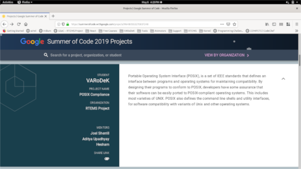

My Blogs |

|
My Experience at Linux Conference.My summers were going amazing, I was a Google Summer of Code 2019 Student at RTEMS, I underwent surgery for my Kidney stones :P , I was working on the project I was in love with. But I was never ready for the surprises I was going to get. I came to know about Open Source Summit and Embedded Linux Conference, Europe 2019 via LinkedIn Read More |
GSoC 2019 — POSIX Compliance(Photo by NeONBRAND on Unsplash) Google Summer of Code Program 2019 @RTEMS — Project Final Report.... Read More |
|
Build Newlib for SPARC and ARM Architecture(Photo by Markus Spiske on Unsplash) Clone Newlib from its Repository and Build it using RTEMS Toolchain.... Read More |
|
1st Milestone AchievedPassed 1st evaluation of Google Summer of Code.... Read More |
|

|
Apply Newlib Patch to RTEMS Source BuilderCreate a patch for Newlib and test it for RSB (RTEMS Source Builder).... Read More |
How To Handle Two Versions of autoconf?Have two versions of autoconf in your system? And you require both frequently? Learn how to handle the situation.... Read More |
|
How to Setup A Headless Raspberry Pi.Operate Raspberry Pi Wirelessly through your Linux System. Want to operate your Raspberry Pi without buying extra keyboard, mouse, monitor, etc (Photo by Harrison Broadbent on Unsplash). Read More |
|

|
My GSoC 2019 JourneyMy own publication on medium for the blogs I published during my GSoC. These blogs contains the learnings I earned while completing my tasks and researching. Read More |
GSoC - My Journey of Community Bonding PeriodA phase when I suffered from a medical emergency, had to undergo a surgery, and realized the real meaning of this period.... (Photo by Nathan Dumlao on Unsplash) Read More |
|
|  |
My Pre-GSoC JourneyHow to prepare for GSoC? How to choose an organization? I am new to open source, how to contribute? How to manage time? How to write proposal? |

|
Pointers in C/C++A simple tutorial for pointers in C/C++. |